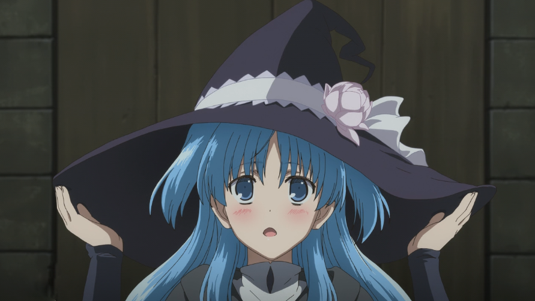
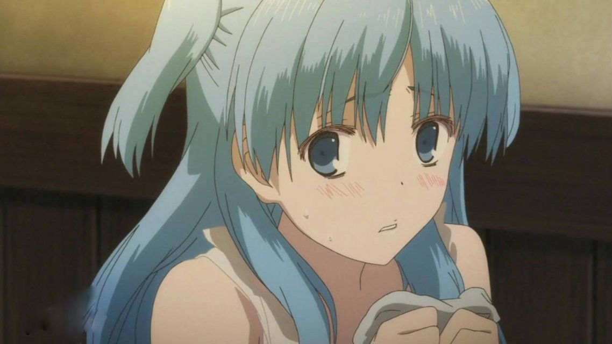
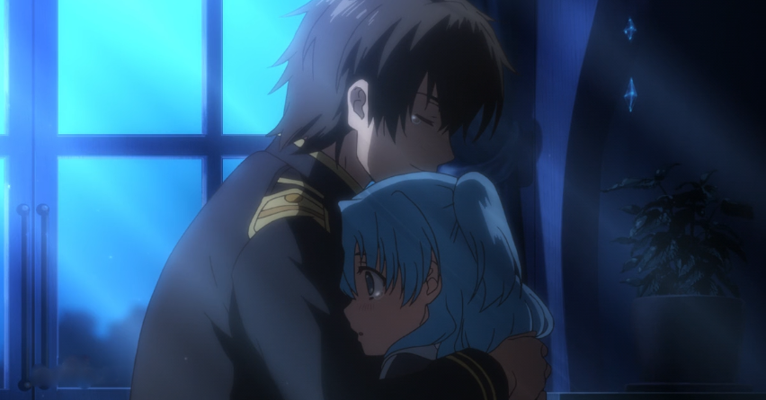
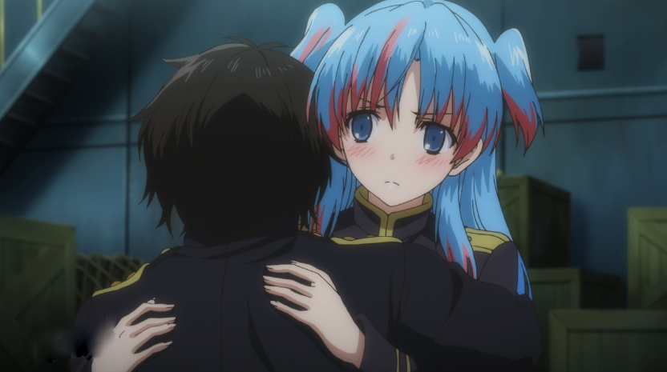
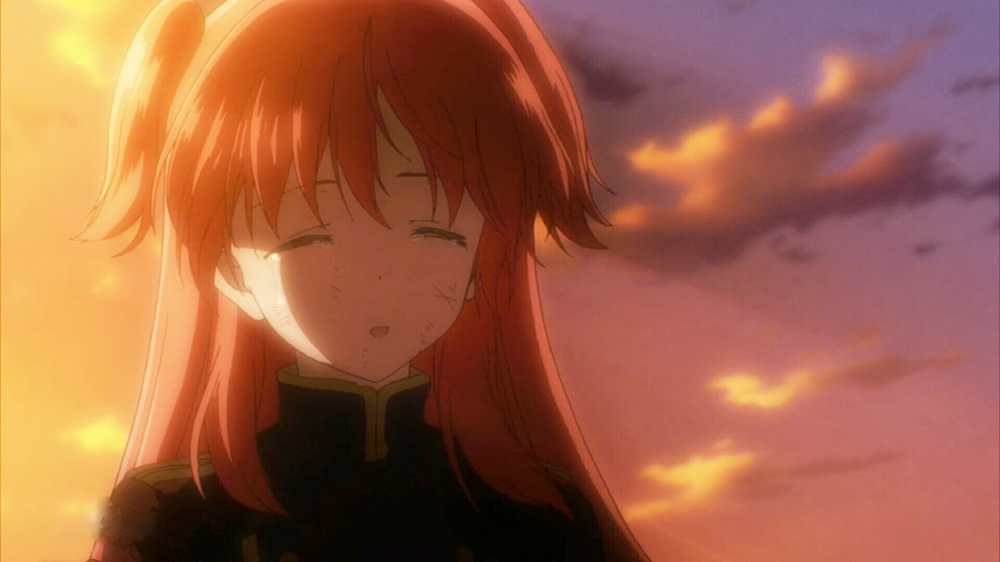

|
可以用来拯救吗？ |
 |
| 相遇
|
 |
| 在高处追逐着口衔胸针的黑猫，因追上黑猫后从高处摔下因此与威廉相遇，也因为从高处摔下的关系帽子丢失。正当珂朵莉因为群众目光异样的原因而准备离开的时候，威廉把胸针还给她、以及用斗篷盖在她身上后一起离开了现场，随后威廉在一家帽店买了一顶帽子送给了珂朵莉，之后一同前往此岛最高的高塔上俯瞰城市风景。临走时要求威廉忘记她。 |
| 收到了威廉送的帽子 |
| |
相处 |
|  |
一次战斗结束后珂朵莉昏迷，威廉背她回去妖精仓库。醒来后发现自己在医务室，威廉告知她现在的症状是急性魔力中毒。但珂朵莉并不在意自己是否超出魔力极限才导致魔力中毒症状出现，对威廉说：“假如……我是说假如喔。万一我再过五天就会死，你能不能对我温柔一点？”并告知他五天后第六兽会袭击第十五号悬浮岛，透露出自己打算以性命来击败对方，并请求威廉亲吻自己。威廉让她别这样自暴自弃地贱卖自己，但珂朵莉反而要威廉别错过这种时机。珂朵莉哭着的时候威廉让她转成俯卧的姿势，珂朵莉不听的情况下威廉亲吻她的额头后硬生生把珂朵莉翻过去开始给她解开魔力中毒症状。 |
| 请求KISS |
天亮后，珂朵莉回忆起昨晚自己说的话羞耻得在床上滚来滚去大闹一番，正当还在羞耻的过程中，可蓉跟菈琪旭前来探病，此时珂朵莉才发现自己的身体没有任何的倦怠感。珂朵莉询问威廉现在在哪的时候因为可蓉的话而产生误会，菈琪旭只好对珂朵莉说手下留情。
|
.png) |
击退第六兽后十八小时，回到了威廉的身边，结果威廉使用目不可视的速度来到了珂朵莉的身边并紧紧抱住了她。 |
| 被威廉抱着 |
回去的路上，珂朵莉询问威廉为什么挑这种危险的手段，并点破了威廉一半以上的意图、也点破他其实本来就是打算战斗的，最后威廉无话可说，只是说珂朵莉观察自己观察的很仔细，而珂朵莉则表示因为自己在恋爱。
|
|  |
准备上飞空艇的时候，宪兵科的一等武官出现要带威廉去见史旺·坎德尔。而珂朵莉也选择了等他回来。 |
| 两天后，威廉仍然还未回来，珂朵莉回到房间的时候前世侵蚀的症状再次出现并倒下。 |
| 珂朵莉醒来，走到厨房打算吃点什么的时候见到了威廉在妮戈兰的房间，并且听到了威廉与妮戈兰的对话，正当威廉不解自己哪一点可以让珂朵莉中意成这样的时候珂朵莉走出来一个一个告诉他，而此时威廉也对珂朵莉说出那句“欢迎回来”。 |
| 醒来后被威廉抱着 |
| 相离
|
|
约会的时候听到威廉要去地表回收圣剑拉琶登希比尔斯以此来阻止自己的前世侵蚀程度。之后珂朵莉说威廉太过担心自己，而威廉也点破珂朵莉失忆的程度越来越严重，但珂朵莉不论如何都要跟随威廉前往地表世界。
|
|
| 来到地表世界后见到了娜芙德跟菈恩托露可。威廉帮两人治疗后菈恩托露可发现了威廉是人类并对他有戒心，同时询问了他关于十七兽的事情。 |
 |
找到了圣剑拉琶登希比尔斯后威廉对娜芙德的圣剑做了调整，完成调整之后珂朵莉发现了威廉有心事。威廉抓住了珂朵莉的手抱着珂朵莉向珂朵莉求婚。
|
被威廉求婚 |
| 葛力克邀请威廉跟珂朵莉跟他一同探索，探索途中珂朵莉隐约感觉到有什么在呼唤她，而这时候葛力克也发现了艾陆可被冰封的尸体，珂朵莉的头发也开始变红并昏迷。 |
|
| 隔天、十八点二十六分，返回天空时遭遇第六兽兽群袭击。十八点三十四分，珂朵莉仍没有恢复意识。十八点三十五分，威廉出击对付第六兽珂朵莉这时候见到了艾陆可，珂朵莉拜托艾陆可请她完成自己最后的心愿，让自己能够回去。珂朵莉醒来后已经什么都想不起来，彷徨地走出房门，见到了娜芙德后已经想不起来她的名字，只是捡起了她的圣剑狄斯佩拉提欧来作战，面对娜芙德的呐喊，珂朵莉只是微笑着对她说：“对不起，我已经绝对无法获得幸福了。因为我发现，我早就是幸福的了。” |
 |
| 威廉抱着已经昏迷的奈芙莲绝望之际珂朵莉降落到他们身边，但也想不起来威廉，但内心却希望他现在可以笑，也希望他可以哭出来，并保护他们击杀了715只第六兽，直至周边没有兽后才停下，弥留之际笑着告诉他一句“谢谢你”后香消玉殒。 |
世界上最幸福的女孩 |
| |